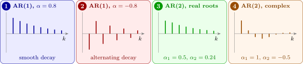

8.1 The first-order process
For \(p = 1\), \(X_t = \alpha X_{t-1} + Z_t\). Since also \(X_{t-1} = \alpha X_{t-2} + Z_{t-1}\), substituting repeatedly gives \begin {align*} X_t &= \alpha (\alpha X_{t-2} + Z_{t-1}) + Z_t = \alpha ^2X_{t-2} + \alpha Z_{t-1} + Z_t \\ &= \alpha ^2(\alpha X_{t-3} + Z_{t-2}) + \alpha Z_{t-1} + Z_t = \alpha ^3X_{t-3} + \alpha ^2Z_{t-2} + \alpha Z_{t-1} + Z_t , \end {align*}
and so on. So \(X_t\) can be expressed in terms of the \(Z\)’s alone, as an MA process of infinite order, \[ X_t = Z_t + \alpha Z_{t-1} + \alpha ^2Z_{t-2} + \alpha ^3Z_{t-3} + \dots , \] provided \(|\alpha | < 1\). This is the duality between AR and MA processes: an AR(1) is an MA(\(\infty \)), just as an invertible MA(1) is an AR(\(\infty \)) (Section 7). With the backward shift operator, \(X_t = \alpha X_{t-1} + Z_t\) reads \((1 - \alpha B)X_t = Z_t\), and formally \[ X_t = \frac {Z_t}{1 - \alpha B} = (1 + \alpha B + \alpha ^2B^2 + \dots )Z_t = Z_t + \alpha Z_{t-1} + \alpha ^2Z_{t-2} + \dots , \] the same expansion, obtained by treating \((1 - \alpha B)^{-1}\) as a geometric series.
Theorem 8.1.1. Suppose \(|\alpha | < 1\), and let \(X_t = \sum _{j=0}^\infty \alpha ^jZ_{t-j}\). Then \(\{X_t\}\) satisfies \(X_t = \alpha X_{t-1} + Z_t\), it is stationary, and \begin {gather*} E(X_t) = 0 , \qquad \sigma _X^2 = \Var (X_t) = \frac {\sigma _Z^2}{1 - \alpha ^2} , \\ \gamma (k) = \alpha ^{|k|}\sigma _X^2 , \qquad \rho (k) = \alpha ^{|k|} . \end {gather*}
Proof. The series converges in mean square: the tail \(\sum _{j>n}\alpha ^jZ_{t-j}\) has variance \(\sigma _Z^2\sum _{j>n}\alpha ^{2j} = \sigma _Z^2\alpha ^{2(n+1)}/(1 - \alpha ^2) \to 0\). Then \(\alpha X_{t-1} + Z_t = \sum _{j\ge 0}\alpha ^{j+1}Z_{t-1-j} + Z_t = \sum _{j\ge 0}\alpha ^jZ_{t-j} = X_t\). The mean is \(\sum _j\alpha ^jE(Z_{t-j}) = 0\), and since the \(Z\)’s are uncorrelated, \[ \Var (X_t) = \sigma _Z^2(1 + \alpha ^2 + \alpha ^4 + \dots ) = \frac {\sigma _Z^2}{1 - \alpha ^2} . \] For \(k \ge 0\), \(X_t\) and \(X_{t+k} = \sum _i\alpha ^iZ_{t+k-i}\) share the shocks \(Z_{t-j}\), \(j \ge 0\), which appear with weights \(\alpha ^j\) and \(\alpha ^{j+k}\), so \[ \gamma (k) = \sigma _Z^2\sum _{j=0}^\infty \alpha ^j\alpha ^{j+k} = \alpha ^k\frac {\sigma _Z^2}{1 - \alpha ^2} = \alpha ^k\sigma _X^2 . \] None of this depends on \(t\), so the process is stationary; dividing by \(\gamma (0)\) gives \(\rho (k) = \alpha ^k\), and evenness gives \(|k|\). □
The same result follows more quickly once stationarity is known. Multiply \(X_t = \alpha X_{t-1} + Z_t\) by \(X_{t-k}\), for \(k > 0\), and take expectations: \[ E(X_{t-k}X_t) = \alpha E(X_{t-k}X_{t-1}) + E(X_{t-k}Z_t) . \] Here \(E(X_{t-k}Z_t) = 0\), because \(X_{t-k}\) depends only on shocks up to time \(t - k\), all independent of \(Z_t\). So \(\gamma (k) = \alpha \gamma (k - 1)\) for \(k > 0\), and since \(\gamma (0) = \sigma _X^2\), repeated use gives \(\gamma (k) = \alpha ^k\sigma _X^2\) and \[ \rho (k) = \frac {\gamma (k)}{\gamma (0)} = \frac {\alpha ^k\sigma _X^2}{\sigma _X^2} = \alpha ^k , \qquad k \ge 0 . \] Since \(|\rho (k)| \le 1\), we must have \(|\alpha | \le 1\). If \(|\alpha | = 1\), then \(|\rho (k)| = 1\) for all \(k\), a degenerate case (with \(\alpha = 1\) the process is a random walk, which is not stationary). Thus \(|\alpha | < 1\) for a proper stationary series. The ac.f. of an AR(1) decays geometrically: smoothly when \(\alpha > 0\), alternating in sign when \(\alpha < 0\) (Figure 6). Unlike the MA ac.f., it never cuts off.

Questions on this section
Stuck on something here? Ask below and it stays attached to this topic.